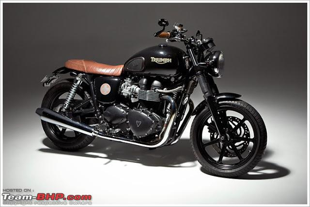
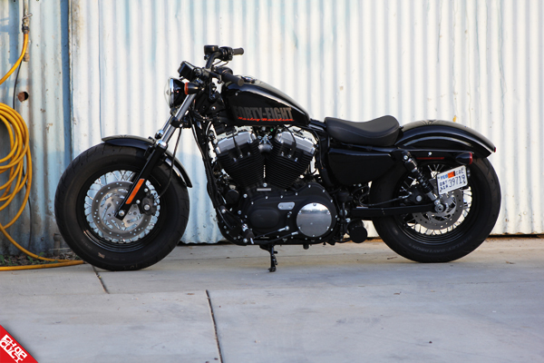

First things first, why is it "Harley vs Triumph" and not "Triumph vs Hraley". Its as simple as that, Harley are on a league of their own.
Harley comes the vintage US and the Triumph is from the ever classical UK. It's like two biggest nations of the world trying to show their
supremacy in the form of a motorcyle. Both are very good on their own leagues. Harley is a lifestyle bike and triumph is a much better bike
than any other bike in the world in terms of engine, quality and handling. So, it's a neck to neck battle between these complete monster manufacturers.

The machine which is as smooth as a butter, the Bonneville T100

The beast in the form a motorcyle, the 1200cc fortyEight